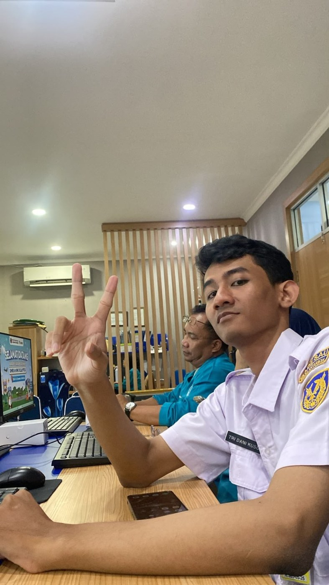

Administrasi Rekam Medis
RS Dr. Esnawan, Jakarta Timur. Mendukung proses administrasi rekam medis rawat jalan dan rawat inap.
Staf Administrasi Rekam Medis sekaligus mahasiswa S1 Teknik Informatika. Saya tertarik pada pengelolaan data, teknologi web, dan pengembangan solusi digital yang bermanfaat.
Saya memiliki pengalaman di bidang administrasi rekam medis rawat jalan dan rawat inap sejak 2022. Saat ini saya menempuh pendidikan S1 Teknik Informatika sambil bekerja. Saya sedang memperkuat kemampuan teknis, terutama dasar pemrograman dan pengembangan web.

RS Dr. Esnawan, Jakarta Timur. Mendukung proses administrasi rekam medis rawat jalan dan rawat inap.
Universitas Indraprasta PGRI (UNINDRA) · Kelas karyawan.
Jurusan Ilmu Pengetahuan Sosial.
Daftar ini menggambarkan kemampuan dan area belajar saat ini.
Tambahkan tautan GitHub, demo, atau dokumentasi setelah proyek siap dipublikasikan.
Website profil pribadi responsif sebagai latihan struktur HTML, styling CSS, dan publikasi web.
Latihan pemrograman berorientasi objek menggunakan class, object, ArrayList, dan input pengguna.
Latihan pemodelan objek untuk data pengunjung dan transaksi tiket.
Ruang untuk menampilkan proyek web, pengolahan data, atau solusi digital yang akan dikembangkan.
Silakan hubungi saya untuk berdiskusi, berkolaborasi, atau bertukar informasi.